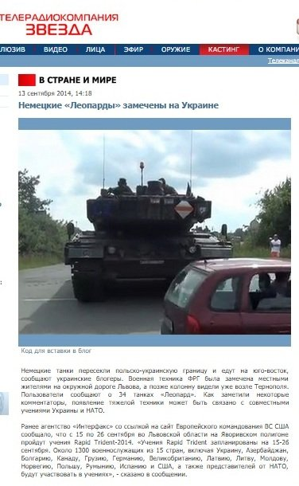
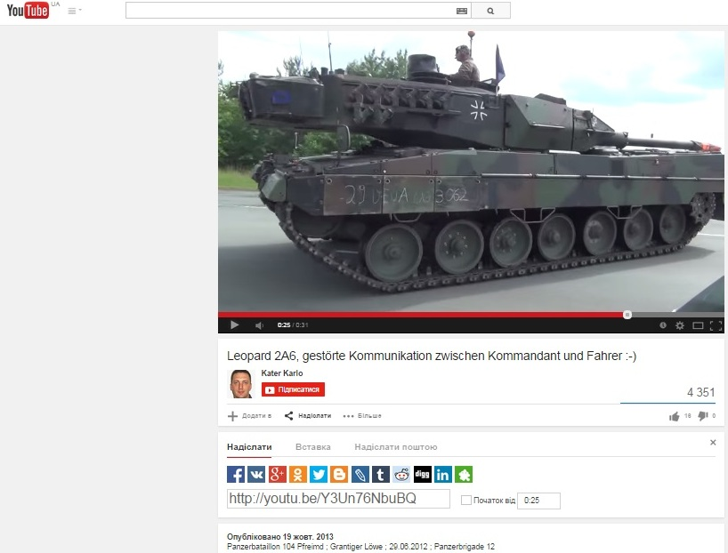
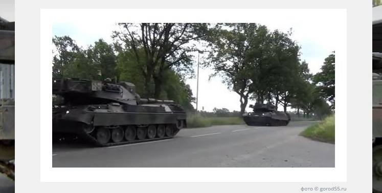
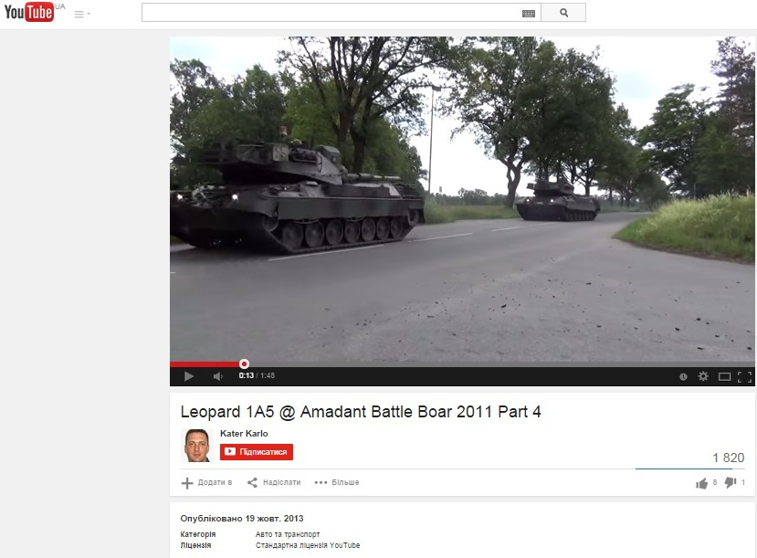
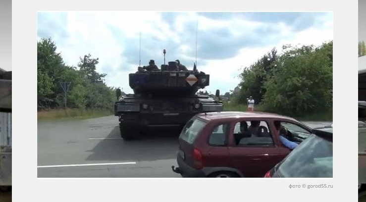
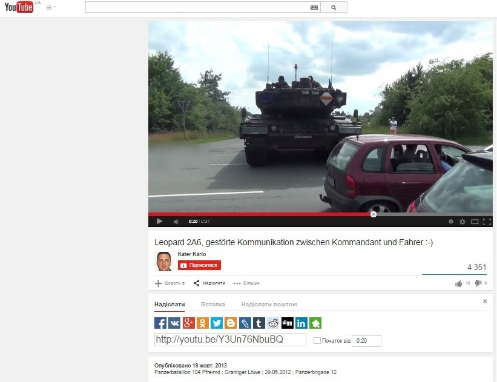
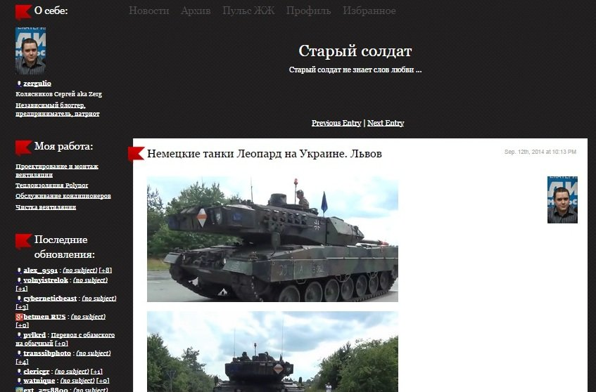
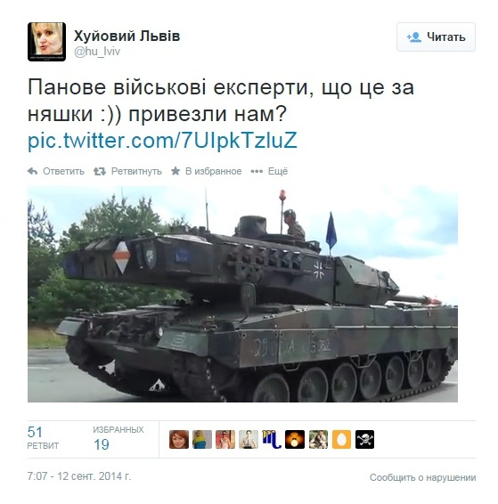
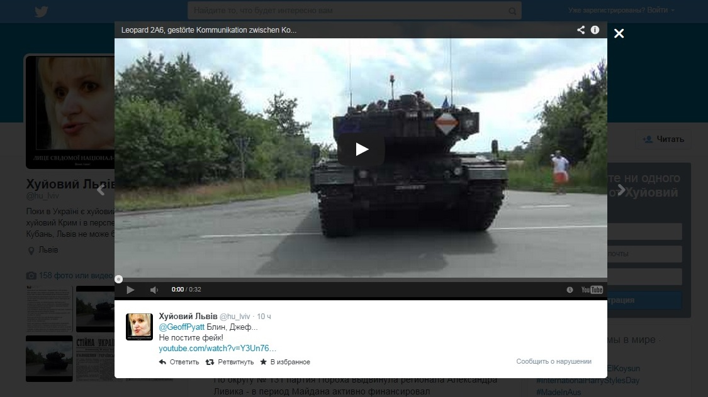

Фейк: Немецкие танки пересекли границу Украины и движутся на восток
13 сентября сайт ukraina.ru опубликовал новость о том, что немецкие танки якобы пересекли границу Украины и движутся на восток.Фотографии необычной бронетехники, как утверждалось, были сделаны 12 сентября на окружной дороге города Львова.
Новость о немецких танках распространили многие СМИ, в частности, телеканал Россия 24.Канал полностью ссылается на сайт ukraina.ru, показывая скрины опубликованных фотографий.
https://www.youtube.com/watch?v=YYsac2Kn58c
Также новость распространилась в сети.
Но эта информация не соответствует реальности.Если присмотреться к якобы фотографиям с места события, можно заметить их плохое качество.Дело в том, что это скрины видеокадров.Этим видеосюжетам уже минимум два года и они были сняты не в Украине.Автор видео датировал одну съемку 2011 годом, а вторую – 2012 годом.На сервис youtube он выложил видео в октябре 2013.Давайте сравним все три фото, которые публикует сайт ukraina.ru, с видео.
Якобы фото 1


Якобы фото 2


Якобы фото 3


Полные варианты видеозаписей:
https://www.youtube.com/watch?v=J7j9x0U7XRs#t=70
https://www.youtube.com/watch?v=Y3Un76NbuBQ
Портал ukraina.ru пишет: «Местные блогеры, комментируя увиденное, предполагают, что немецкие «Леопарды» движутся в сторону Новороссии».Но дает ссылку не на львовских блогеров, а на блог россиянина из Екатеринбурга.

А пользователь ЖЖ из Екатеринбурга, в свою очередь, ссылается на сайт vott.ru.
Также удивительно, что на фото с танками на сайте ukraina.ru стоит копирайт gorod55.ru, а это сайт города Омска.Там действительно есть новость о немецких танках в Украине, но ссылаются они на вышеуказанных пользователя ЖЖ и портал vott.ru.Получается замкнутый круг.Вопрос: были ли сообщения о танках от украинских пользователей соцсетей?
Были.Мы нашли первоисточник – украинский — на который почему-то никто из СМИ не ссылается.Почему?Потому что это паблик в Твиттере с названием, которое говорит само за себя.

Кстати, паблих «Х****** Львів» уже опубликовал оригинальное видео с призывом не постить фейк.

Posted On: 2014-09-15T21:00:00
Content Date: 2014-09-15
Download Date: 2021-07-16
Document ID: L0C04FGL5